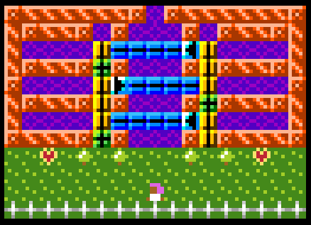
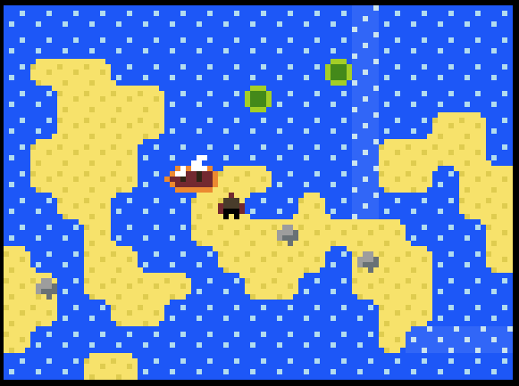

About
It’s a jam.
Submit Your Game
Resources
Inspiration
Aunt Flora’s Mansion
by anna anthropy
Aunt Flora’s Mansion is another good one. Wow these are pretty good.
Skipping Stones to Lonely Homes
by Alan Hazelden
Skipping Stones to Lonely Homes really shows what you can do if you want to.
Showcase
This is where the games will go once people submit them.